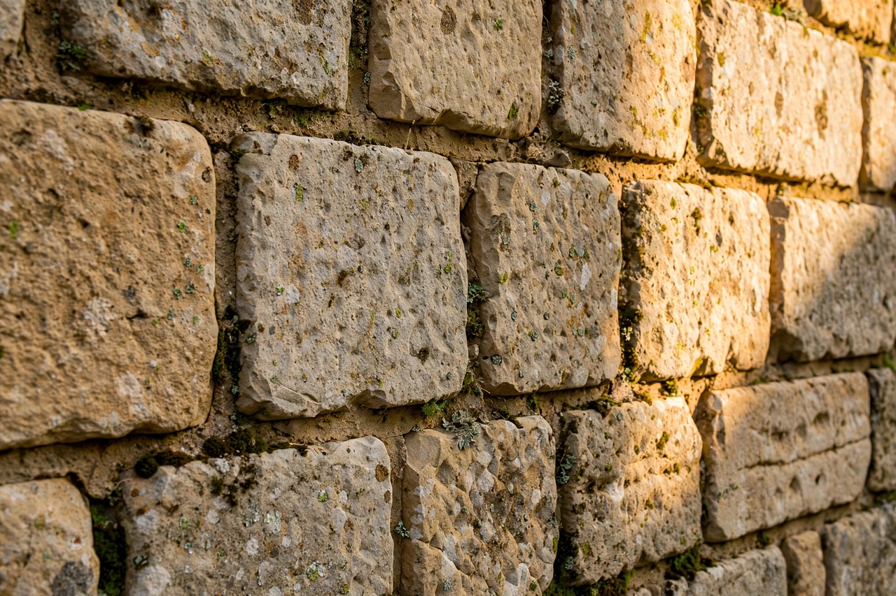

From Wikipedia, the free encyclopedia
| Stone | |
|---|---|
 Dressed stone masonry | |
| Material | Rock (esp. granite, limestone, sandstone, marble, slate) |
| Uses | Construction, sculpture, tools, monuments, paving |
| Extraction | Quarrying |
Stone is a naturally occurring solid aggregate of minerals — rock in the form in which it is used by people. The word is applied to rock in pieces of all sizes: from monumental building blocks and sculpture rough-outs down to pebbles, gravel and the "stones" of stone tools. Humanity has worked stone since the earliest technologies of the Stone Age, and dimension stone — granite, limestone, sandstone, marble and slate quarried and cut to size — remains a major material for construction, paving and monuments.
Stone is extracted by quarrying — splitting, drilling and sawing — then dressed by stonemasons into ashlar blocks, rubble or carved ornament. Flint knapping produced the cutting tools of prehistory; polished stone axes, querns and millstones served early farming. Stone's durability made it the material of temples, castles, bridges and gravestones, and of sculpture from Egyptian statuary to Michelangelo. Dry stone walls, built without mortar, structure many pastoral landscapes.
Geologists generally prefer the term rock; a stone is understood as a discrete piece of rock, as in glacial erratics or the clasts of a conglomerate. In mineralogy and gemology, "stone" also denotes a gem. In folk usage the word extends to hard biological concretions (kidney stones, gallstones) and to fruit pits.